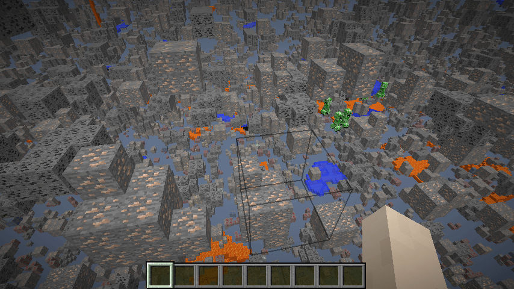
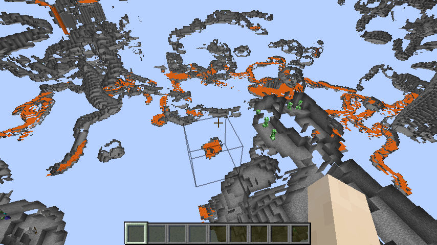
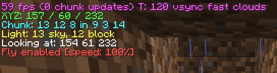
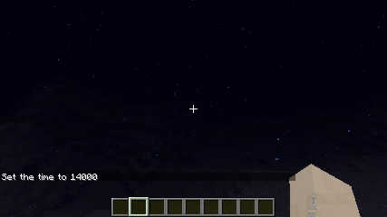
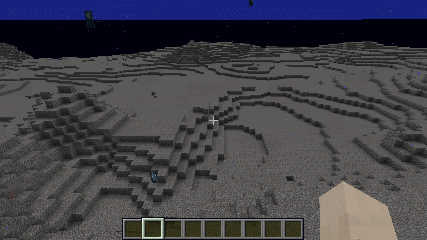

ERA 1 Fundación Canónica: AmbientOcclusion (1.6.4 – 1.11.x)
La base histórica y el núcleo de la herramienta creado por AmbientOcclusion. Introdujo el sistema de transformaciones en caliente, compatibilidad con LiteLoader y Forge, y la interfaz gráfica de usuario en Swing para configuración dinámica de bloques en tiempo de juego.
Features Canónicas
- XRay mode Tecla predeterminada: X
- En la interfaz de usuario se seleccionan cuáles bloques son renderizados y cuáles se ocultan.
- Permite crear múltiples perfiles independientes y asignarles atajos de teclado individuales.

- Cavefinder Tecla predeterminada: C
- Invierte el renderizado de caras para revelar cavernas subterráneas, grietas y mazmorras.

- Coordinates display Tecla predeterminada: F
- Muestra información útil en pantalla, como coordenadas XYZ, FPS, bioma actual y dirección cardinal.
- Completamente personalizable desde la pestaña de configuración.

- Fullbright Tecla predeterminada: L · Reubicada en suite MB a: R
- Permite ver con total claridad en la oscuridad total o bajo el agua sin necesidad de antorchas ni pociones.
- A diferencia de los ajustes habituales de gamma que generan pérdida de contraste y lavado de color, este modo conserva la saturación auténtica de las texturas.
- Comparación visual: Brillo convencional por gamma vs Fullbright optimizado:
-


- Fly mode Activación canónica: Doble espacio
- Permite volar libremente en mundos de supervivencia sin necesidad de permisos de operador ni modos creativos.
- Velocidad de vuelo ajustable desde el archivo de configuración o la GUI.


Nota sobre el comportamiento original de teclas: En el cliente canónico de AO, mantener pulsada la tecla de perfil provocaba un envío constante de señal continua (KeyStay), lo que provocaba un re-tickeo masivo e ininterrumpido similar a presionar reiteradamente F3 + A para forzar la recarga de chunks. Este comportamiento histórico fue posteriormente perfeccionado en la suite MB.
ERA 2 Suite de Infraestructura: DromarLeBanisseur (1.12.2 – 1.20.x)
Desarrollada por DromarLeBanisseur para garantizar la transición estructural del mod ante los profundos cambios en la arquitectura de lanzamiento de Minecraft tras la versión 1.12.2. Aísla la transformación bytecode mediante un contenedor autónomo de LaunchWrapper.
Innovaciones de la Suite DLB
- Contenedor LaunchWrapper 2.4.1 Autónomo: Integración del cargador
DLBLaunchClassLoadercon exclusión limpia de bibliotecas del sistema y mod-loaders externos. - Desacoplamiento del Lanzador: Separación estricta entre la orquestación de arranque (
LaunchOrchestrator) y la aplicación de parches a las clases del juego. - Optimización ProGuard: Reducción extrema del empaquetado del cargador a tan solo 27.2 KB (
launchwrapper-2.4.1.jar), maximizando la velocidad de inicio. - Despliegue de Doble Ruta: Instalación estandarizada en
libraries/net/minecraftxray/dlb/compatible tanto con el lanzador vanilla como con gestores avanzados.
ERA 3 Suite Moderna: MisterBartra (1.21.6+)
Evolución moderna diseñada y optimizada por MisterBartra para Minecraft 1.21.6+. Resuelve las fricciones históricas del cliente, moderniza el pipeline gráfico a shaders directos y refina la ergonomía de control.
Mejoras Clave de la Suite MB
- Normalización Estricta de Teclas GLFW: Mapeo de teclas sin asignar a
-1enKeyBinding, eliminando de raíz los artefactoskey.keyboard.0y los molestos recuadros rojos de colisión en la interfaz de Controles. - Filtro de Entrada KeyDown por Flanco: Erradicación del ciclo continuo
KeyStayal mantener presionada la tecla de perfil. La activación se procesa exclusivamente en el flanco de bajada (un único KeyDown), neutralizando el re-tickeo masivo que simulaba pulsar repetidamente F3 + A. - Fullbright Persistente por Shader
(Lcam;F)F: Reubicado en la tecla R. Hook directo sobre el shader de iluminación con anulación deDarknessScale(0.0f) y fijación deNightVisionFactor(1.0f). Se mantiene activo tanto en el terreno como en el renderizado de entidades a través de cualquier cambio de perfil. - Vuelo Ergonómico con Absorción de Inercia: Activación por doble pulsación de tecla asignada e intercepción de impacto en el aterrizaje (
fallDistance = 0.0), eliminando daños de caída injustificados al desactivar el vuelo. - Detección Dinámica en Registros Vivos: Resolución automática de bloques mediante
BuiltInRegistries.BLOCKsin tablas hardcodeadas, con soporte para etiquetas de mods (#ores,@create:) y propiedades deBlockState. - Persistencia Híbrida Bidireccional: Serialización limpia en formato JSON moderno (
xray.json) con migración automática y soporte de importación/exportación conxray.propertieshistórico.
Evidencia Visual de la Suite Moderna MB
Capturas reales de la suite MB en ejecución sobre Minecraft 1.21.6+:

Panel Swing moderno con resolución en vivo de bloques y persistencia JSON.

Menú de Controles: mapeo estricto a -1 en GLFW, sin conflictos en rojo.
Matriz Comparativa de Controles entre Suites
| Función | Era 1: AO Canónico | Era 2: DLB Suite | Era 3: MB Suite (Moderna) | Comportamiento / Diferencial |
|---|---|---|---|---|
| X-Ray | X | X | X | MB previene el re-tickeo masivo con filtro KeyDown por flanco. |
| Cavefinder | C | C | C | Inversión de culling y ordenamiento de profundidad multicapa. |
| Fullbright | L | L | R | AO: Gamma clásico → MB: Hook persistente a shader en terreno y entidades. |
| Coordinates HUD | F | F | F | Variables configurables ({X}, {Y}, {Z}, {FPS}, {Biome}, {Fly}). |
| X-Ray GUI / Config | J | J | J | Panel Swing con búsqueda rápida y resolución dinámica de registros. |
| Vuelo (Fly) | Doble Espacio | Doble Espacio | Doble pulsación / Configurable | MB incluye absorción de inercia y eliminación de daño de caída. |
| Teclas sin asignar | Código 0 (key.keyboard.0) | Código 0 | -1 (Sanitizado GLFW) | Elimina conflictos visuales y marcos rojos en Controles de Minecraft. |